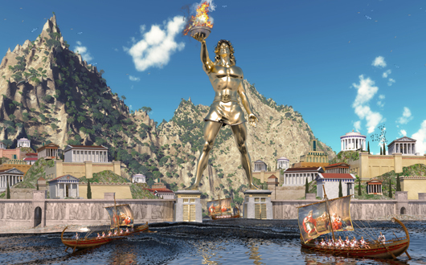
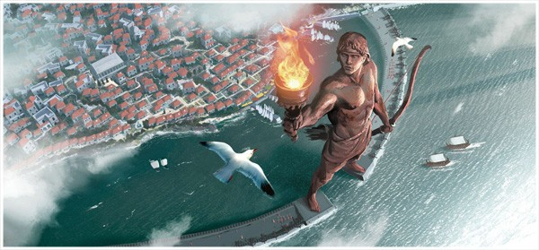
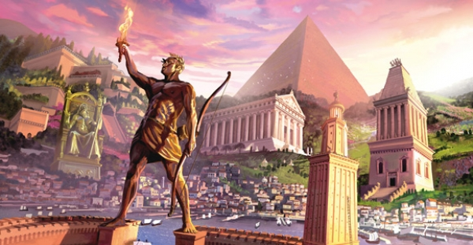

La sud de Halicarnas, cam la 25 km de coasta Asiei Mici, se află o
insulă în formă ovală, în suprafață de 1400 mp: Rhodos, patria unor
iscușiăți navigatori și - într-un trecut mai îndepărtat - adoratori ai
lui Helios (zeul soarelui) și cultivatori ai artelor. Dupa Diodor,
heliolatria rhodienilor își are originea în povestea de dragoste dintre
Helios și Rodha; aceasta din urmă, fiica lui Neptun, l-a convins pe
zeu să salveze insula de inundații, daruind pământului rodnicie, și de
atunci locuitorii ei venerează mai mult ca pe oricare dintre zei pe
Helios, pe care îl consideră strămoșul neamului lor
. Despre
iscusința navigatorilor rhodieni și întinsele lor relații comerciale
stă marturie faptul că au întemeiat colonii în locuri îndepărtate
ca Italia, Sicilia și Spania, iar către miazănoapte pe coasta Marii
Negre: la Histria s-a gasit un cap de statuie care trebuie să fi
măsurat circa patru metri, lucrat în tehnica școlii rhodiene. În
cetatea Rhodos, capitala insulei, funcționau celebre școli de
elocință (Eschin), de pictură (Apelles) și de filosofie, iar mai
târziu însuși Cezar, tânar, va veni de la Roma sa urmeze aici
cursurile de retorică a lui Apollonius Molo. Pliniu, citând pe
consulul roman Mucianus, ne informează că în secolul I e.n. insula
avea încă 3000 de statui, dintre care o suta de proporții
gigantice.
  
Amplasat la intrarea unuia dintre porturi, înalt de peste 30 metri
(unele texte indică aproape 40 m), colosul a avut existența cea mai
scurtă dintre toate cele șapte minuni: un puternic cutremur de pământ
l-a doborat la numai 56 de ani după ridicarea lui. Dar și așa,
doborat
, ne spune Pliniu, trezește admirația. Puțini
oameni îi pot îmbrățișa degetul mic; degetele sunt mai groase decat
partea cea mai mare a unei
statui. Golul membrelor rupte se aseamana cu niște caverne
.